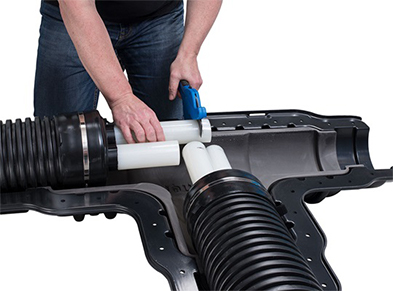

Uponor Ecoflex
Теплоизолированные трубы для наружных сетей теплоснобжения, водоснабжения и напорной канализации
Главное о Uponor Ecoflex
- Гарантия
10 лет - Минимум
земляных работ - Низкие
теплопотери - Сделано в
Финляндии - Не подвергается коррозии и зарастанию
- Высокая
гибкость
Область применения Uponor Ecoflex
Ecoflex - это изолированные трубопроводы, используемые системах отопления, а также горячего
и холодного водоснабжения, напорной канализации и водоотведения, транспортирующих воду
температурой до 95°С и давлением до 1,0 МПа, а также в сетях холодоснабжения и водоотведения.
Трубы Ecoflex предназначены для бесканальной прокладки, поэтому их можно разматывать из бухт прямо в
траншею, причем длина участка без стыков может достигать 200 м. Трубах и фитингах нет частей, подверженных воздействию коррозии. Для монтажа фитингов Wipex не потребуется специального инструмента и оборудования.
-
Владельцам коттеджей
Подключить к основной системе отопления ещё одно здание или бассейн теперь не проблема. Предварительно изолированные трубы Ecoflex позволят минимизировать теплопотери на транспортировке теплоносителя от котельной до точки потребления энергии. Быстрый и простой монтаж, абсолютная надежность и долговечность системы.
-
Управляющим компании
Сведение к минимуму потерь энергии при траспортировке теплоносителя от теплового пункта к потребителям. Система труб Ecoflex не требует обслуживания, а любые ремонтные работы осуществляются за 2-3 часа в любое время года. Полное отсутствие эксплуатационных затрат и максимальное сохранение тепла.
-
Застройщикам
Экономия на земляных работах за счет бесканальной системы укладки, отсутствие необходимости в дорогостоящих и поражоопасных сварочных работах.Максимальное сокращение численности рабочих на укладке магистрали благодаря легкости и гибкости трубы.
-
45
лет
производства труб
-
3
млрд
метров труб произведено
-
39
стран
пользуется нашими продуктами
Преимущества Uponor Ecoflex
Эластичная изоляция
Уникальная многослойная изоляция, внутри которой труба и слои могут двигаться относительно друг друга.
- Изоляция из вспененного сшитого полиэтилена PE-X с закрытыми порами
- Наличие воздуха между слоями изоляции дополнительно снижает теплопотери
- Подающая труба всегда лежит по центру сечения уточнить
- Влагопоглощение < 1%
- Нет теплообмена между трубами
Надежная защита
Защитный гофрированный кожух изготавливается из полиэтилена высокой плотности HDPE. Уникальный профиль кожуха соответствует требованиям для установки на участках с интенсивным транспортным движением SLW 60 (грузовые автомобили до 60 тонн) и обеспечивает продольную гибкость трубы
Предотвращение коррозии
Трубы теплоснабжения имеют антидиффузионный слой от проникновения кислорода EVON (сополимер этилена и винилового спирта) для предотвращения коррозии элементов системы и соответствуют требованиям ISO 17455 по кислородопроницаемости
Цветная маркировка
Двухцветная серцевина теплоизоляции существенно упрощает монтаж и исключает ошибки подключения
Характеристики и тесты
- • Трубы из сшитого полиэтилена PE-Xа устойчивы к
заливанию и засорам, не вступают в реакцию с транспортируемоей средой - • Трубы Uponor проходят тест на постоянную температуру
100°C с максимальным рассчетным давлением (10 или 6 бар) в течении 1 года - • Образец трубы Uponor PE-Xa испытывался на максимальных нагрузках с 1973 по 2004 г. -95°C и 10 бар
- • Расчётный температурный режим 95°C/70°C
- • Сертифицированные соединение «Труба + Фитинг» и техническая поддержка производителя
Срок службы Uponor Ecoflex
Отсутствие накипи обеспечивает рабочей трубе 50-летний срок службы. За 40 лет произведено более 3,3 миллиардов метров труб и на их основе осуществлен монтаж более чем в 60 странах по всему миру.
- Срок службы 50 лет*
- Расчетный температурный режим 95°C / 70°C
- Тест на постоянную температурную нагрузку 100°C / 1год
Монтаж Uponor Ecoflex
-
Простота
Монтаж трубы и соединительных элементов очень
прост и не требует наличия на объекте специального инструмента, работающего от электричества. -
Скорость укладки
Исключительная гибкость трубы обеспечивает
быструю укладку на месте выполнения работ -
Соединение
Теплоизолированные трубы Uponor соединяются с помощью обжимных фитингов и pезьбовых элементов к ним Uponor Wipex. Соединительные элементы Uponor Wipex изготавливаются из коррозионностойкой латуни и бpонзы. Для уплотнения резьбовых соединений обжимных фитингов с pезьбовыми элементами Uponor Wipex используются специальные уплотнительные кольца.
Фитинги Uponor Wipex
Зажимные фитинги Uponor Wipex предназначены для труб
Thermo. Varia. Aqua. Quattro. Supra (Plus/Standart). используется в системах тепло-холодоснабжения, холодного и горячего водоснабжения, канализации. Внутреняя резьба фитинга оснащена уплотнительным кольцом, не требуется уплотнение по резьбе. Для труб диаметром от 25 до 125 мм,
серия S5,0 (PN6) и S3,2 (PN10)
Монтаж с фитингами Uponor Q&E
Uponor Q&E – это уникальная и инновационная система фитингов, которая использует эффект памяти формы труб из сшитого полиэтилена PE-Xa для быстрых и простых соединений. Широкий ассортимент фитингов и аксессуаров делает Q&E полноценной, надежной и экономически эффективной системой. Коррозионная стойкость обеспечивает ей безопасность и герметичность.
-

1. Этап
Обрежьте конец трубы под прямым углом.
-
2. Этап
Наденьте на трубукольцо до упора и расширьте трубу вместе с кольцом. Для равномерного расширения, головка инструмента автоматически поворачивается
-
3. Этап
Без задержек наденьте расширенную трубу на штуцер фитинга до упора. Держите трубу
до тех пор, пока она не обожмет фитинг.
Готово!
Расширительный инструмент
M18
Расширительный инструмент Milwaukee M18
- • Работает от аккумулятора
- • Для труб диаметром
18-32 мм (40 мм PN6) - • Расширительные головки: головки с автовращением, совместимые с
инструментом M12
M18: увеличенный размер
Расширительный инструмент Milwaukee M18 VLD PEX
- • Работает от аккумулятора
- • Для труб диаметром 40-75 мм
- • Универсальные
расширительные головки с автовращением для PN6 и PN10 - • Возможность работы как
при удерживании за рукоятку,
так и при установке на ровную поверхность